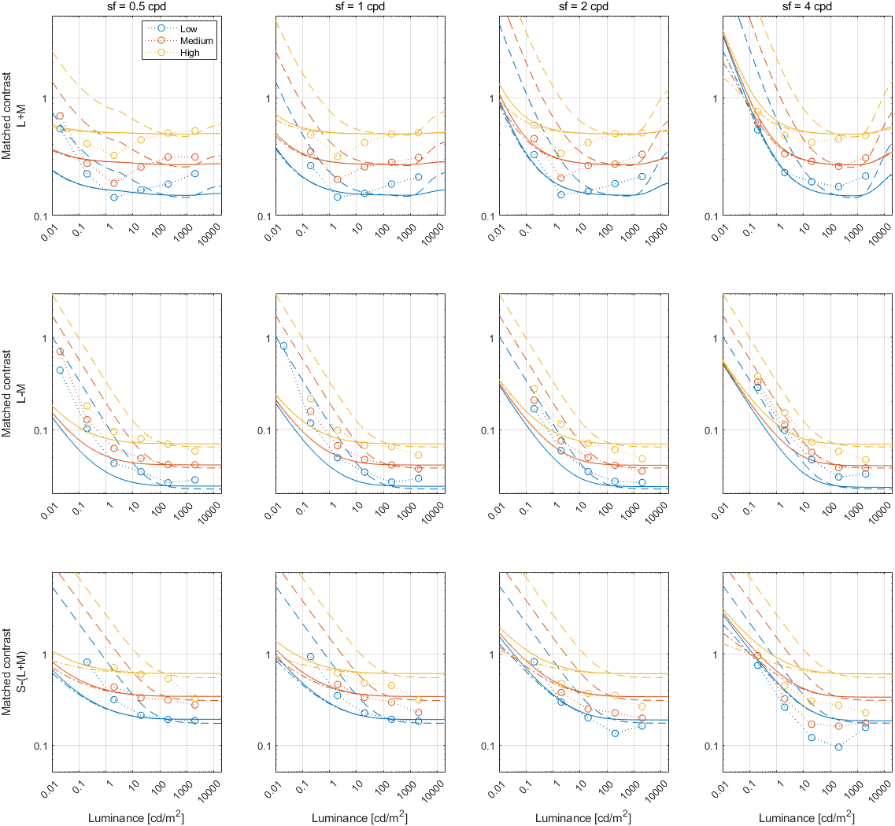
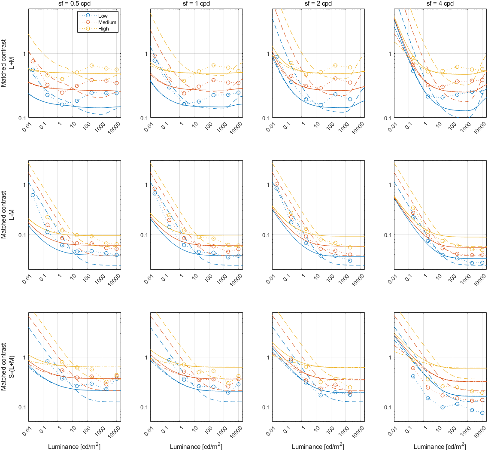

Default SCMF models
Fitting error
Dataset
Fitting error
Matched contrast adjustment
Kulikowski's SCMF
Peli's SCMF
Kulikowski's SCMF
Peli's SCMF
hdr_matching_young
4.80 [dB]
6.09 [dB]
1.000
1.000
Legend
To keep the plots legible, only up to 3 models are plotted.
↸
Dataset: [hdr_matching_young] Ashraf et al., 2022
SCMF across luminance levels (ref level: 200 nits, fixed cycles, lambda: 0.5)

SCMF across luminance levels (ref level: 20 nits, fixed cycles, lambda: 0.5)

SCMF across luminance levels (ref level: 20 nits, fixed cycles, lambda: 1)